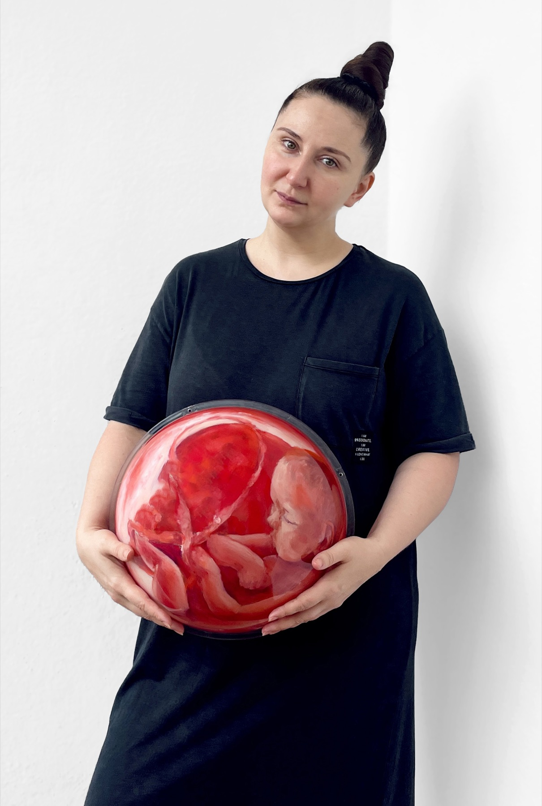
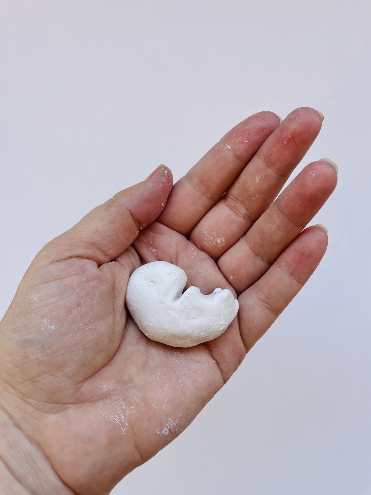

Biography
Leah Larisa Bunshaft (Dizlarka) was born in Ukraine, spent her youth in Russia. Later she emigrated to Israel and currently lives and works in Spain. She holds an MA from the Arts and Construction Department in The Novgorod State University.
Trauma received in childhood, changes of countries influenced the choice of themes of the artist. A key theme in Leah's artworks is the vulnerability of the fragile human being in this insecure world, issues of femininity, women's life, feminism and self-identity. She is also fascinated by the theme of life cycles and correlation.
Dizlarka is a multidisciplinary artist who works in mixed media. Her artworks have been published and exhibited in the United States, Germany, United Kingdom, Israel, Spain, Italy and Greece, including presentations at the MoRA International Museum (USA), the Civic Museum of Nepi (Italy) and the Agostino Diffused Museum (Italy).
Artist Statement
I create art to explore human fragility in an unstable and constantly changing world. My work grows from the tension between reality and fear, vulnerability and resilience, the desire for control and the unpredictability of life. I am interested in how we try to create a sense of order and inner stability while the world around us continues to change.
My experience of moving between cultures and living through periods of instability makes these questions deeply personal: Who am I and where do I belong? Without what would I no longer be myself? When does experience protect me, and when does it begin to limit me?
I explore femininity, feminism, motherhood, identity in emigration, life cycles and correlation. Much of my work is rooted in the female experience. Personal experience becomes a starting point for works.
I work across drawing, painting, photography, printmaking, sculpture and installation, often combining different techniques and materials within a single work. Concrete, glass, textiles, photographs and found objects are not simply chosen to illustrate an idea; their physical qualities and histories become part of the work itself.
Through these combinations, I transform personal experiences and fragments of everyday life into visual metaphors for the fragile and constantly shifting experience of human life.

Cycles of Despair
I listed the piece “Not Mine Anymore” in my application, but I decided to submit other piece of my project after all because its concept is more profound. The artwork “Cycles of Despair” explores the experience of dealing with infertility and the attempts to resolve this issue. In creating this piece, I drew on my personal experience and the medication I took myself during the process of in vitro fertilization. This artwork captures the grueling emotional and physical toll of the repeated attempts to conceive. The work reflects on the cycle of hope and disappointment, each new month bringing with it the weight of anticipation and fear of failure. It speaks to the helplessness of those who become trapped in this ongoing process, where time feels both relentless and uncertain. The hormone pill blister packs, cut into Tetris-like shapes, represent the randomness of conception: despite planning and control, chance plays a significant role. These packs are windows into untold stories, where each pill taken represents hope, and each empty space symbolizes a failed attempt. The remaining pill in one of the packs hints at an unfinished journey, always incomplete, always moving forward.
The clock hands at the center of the piece mark the passage of time, yet the scattered numbers suggest that the outcomes of each cycle are unpredictable. This lack of control, mirrored by the chaotic arrangement, highlights the fragile balance between expectation and despair. Surrounding images like a white dove, human faces, and the snail inching forward reinforce the persistence required, while the twine, tied in a knot like a noose, speaks to the suffocating pressure that comes with each new attempt. The piece captures a haunting, repetitive experience: a game of chance, played over and over, with no guarantee of victory. This artwork is the part of my big project “Fragile Beginnings”.
Details of Artwork
Mixed mediaIn Motion
VideoAbout the Project
Fragile Beginnings is a deeply personal, multidisciplinary art project born from my experience of a difficult late pregnancy, early motherhood, and the realization that infertility affects approximately one in six people worldwide. The worst part is that people find out about their infertility as a surprise just when they want to have children. No one tells them this information when they're young so they can come to terms with it.
The project consists of 46 artworks and a narrative in three parts: planning, pregnancy, and motherhood. Shaped by conversations with women whose journeys are marked by longing, uncertainty, loss, and hope, the project explores the physical and psychological cost of bringing new life into the world.
Through sculpture, photography, assemblage, textiles, video, and mixed media, I transform intimate objects and bodily traces into metaphors for vulnerability, obsession, exhaustion, transformation, and the fragile boundaries between self and other.
Motherhood is often idealized, while its invisible struggles remain largely unspoken. This project seeks to make them visible, revealing the contradictions of an experience where love coexists with fear, creation with loss, and tenderness with profound physical and emotional demands.
Against a backdrop of political violence, displacement, and a world increasingly desensitized to suffering, Fragile Beginnings becomes a reflection on the value of human life and our collective responsibility toward it. It asks us to look beyond the abstract numbers of global crises and recognize the individual lives, bodies, and stories behind them.